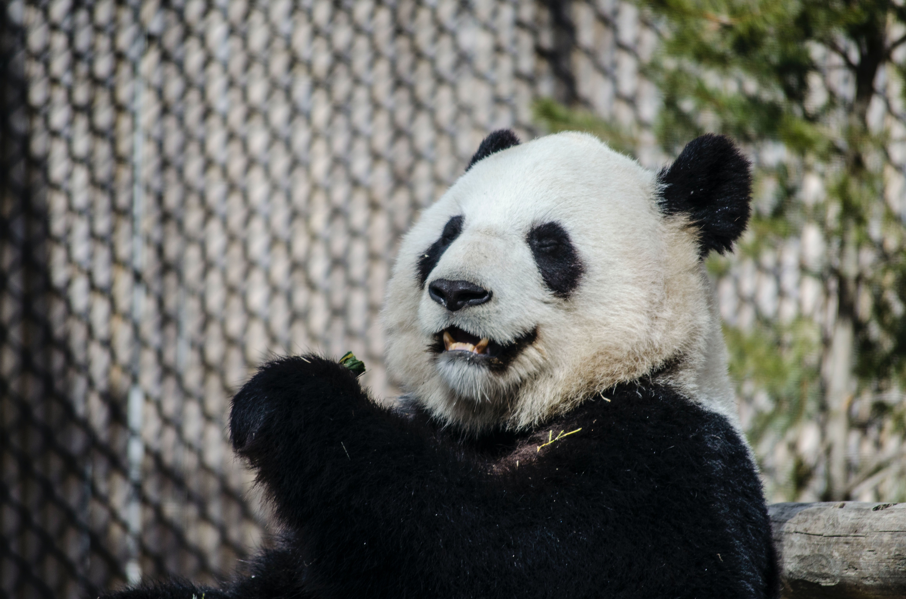

<DOCTYPE html>
<html lang="pt - br">
    <head>
        <title> Pandinha SCA </title>
    <meta charset="utf8">
    <link rel="stylesheet" type="text/css" href="bootstrap/css/bootstrap.min.css">
</head>
<body>
    <nav class="navbar navbar-expand-lg navbar-light bg-light">
        <a class="navbar-brand" href="a">
            
    </a>
    <div class="collapse navbar-collapse"></div>
    <ul class="navbar-nav">
       <li class="nav-item">
           <a class="nav-link" href="aCaracterísticas">Características</a>
       </li> 
       <li class="nav-item">
        <a class="nav-link" href="aReprodução">Reprodução</a>
        </li>
        <li class="nav-item">
            <a class="nav-link" href="aCuriosidades">Curiosidades</a>
    </li>
        </ul>
        <div>
        </nav>

        <section id="Características">
            <div class="container-fluid Características text-center margin">
               <h3>Características</h3>
                
                <h3>Os ursos pandas são mamíferos, de pelagem branca com manchas negras. Classificados como carnívoros, sendo que sua dieta está baseada no consumo de bambu.</h3>
            </div>
        </section>

        <selection id="Reprodução">
            <div class="container-fluid text-center margin Parceiros">
                <h3 class="margin">Reprodução</h3>
                
                <h3>A estação reprodutiva desses animais, no entento, é curta. As fêmeas entram no cio apenas na primavera. A gestação dura entre 95 a 160 dias. Normalmente a fêmea dá a luz a apenas um filhote.</h3>
            <div class="container">
<div class="row">
    <div class="col-md-4">

    </div>
</div>
            </div>
            </div>
        </selection>

        <selection id="Curiosidades">
<div class="container-fluid text-center margin Curiosidades">
    <h3>Curiosidades</h3>
    <div class="container">
        <div class="row">
            <div class="col-md-6"></div>
        </div>
        <div class="col-md-6">
            
            <h3> </h3>
        </div>
    </div>
</div>
        </selection>
</body>

</html>